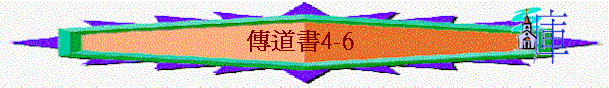

|
人
生 的 意 義 |
|||
|
引言 |
勞碌的價值 |
意義的人生 |
總結 |
|
1:1 |
1:1-6:12 |
7:1-12:7 |
12:8-14 |
一.
勞碌的價值 →
全皆虛空(1:2-6:12)
4.從比較角度來看(4:1-5:12)
〜此段很多「比」「更強」「強如」「虛空」等字，作者嘗試用比較角度，說出一些人所作的仍不如另一些人，即使勞碌半生，仍是捕風。
A.活著受欺壓的
vs 未曾見惡事的
a.受欺壓卻沒人安慰
「我又轉念，見日光之下所行的一切欺壓。看哪，受欺壓的流淚，且無人安慰；欺壓他們的有勢力，也無人安慰他們。」4:1
〜勞碌一生，但卻受欺壓，沒人安慰，所作的有甚麼益處呢？
b.早已死而不受欺壓
「因此，我讚歎那早已死的死人，勝過那還活著的活人。」4:2
〜早死的人，已沒有受欺壓，所以比活著仍受苦的更強！
c.未曾生而未見惡事
「並且我以為那未曾生的，就是未見過日光之下惡事的，比這兩等人更強。」4:3
〜但最強的，莫如未曾生出來，未有勞碌，也未見惡事，他們比這兩等人更強！
B.勞碌被嫉妒的 vs 愚昧得安靜的
「我又見人為一切的勞碌和各樣靈巧的工作就被鄰舍嫉妒。這也是虛空，也是捕風。愚昧人抱著手，吃自己的肉。滿了一把，得享安靜，強如滿了兩把，勞碌捕風。」4:4-6
〜有很多人很有智慧，作了很多靈巧工作，但生活中被人嫉妒，不得安寧的日子，有甚麼益呢？但愚昧人可能抱著手，沒有作了很多偉大工作，但沒人嫉妒，得享安靜，他們似乎比勞碌的人更強！
C.孤獨無同伴的 vs 有同伴支持的
「我又轉念，見日光之下有一件虛空的事：有人孤單無二，無子無兄，竟勞碌不息，眼目也不以錢財為足。他說：「我勞勞碌碌，刻苦自己，不享福樂，到底是為誰呢？」這也是虛空，是極重的勞苦。」4:7-8
〜人若工作不息，但孤單無伴，所作有甚麼價值呢？
〜而有伴之好處在於
a.成果----一同分享
「兩個人總比一個人好，因為二人勞碌同得美好的果效。」4:9
b.旅途----有人扶持
「若是跌倒，這人可以扶起他的同伴；若是孤身跌倒，沒有別人扶起他來，這人就有禍了。」4:10
c.作息----得著溫暖
「再者，二人同睡就都暖和，一人獨睡怎能暖和呢？」4:11
〜以前的旅客，在旅途中要作息時，和同伴一同睡，一同抵受寒風威脅。
d.爭戰----更有力量
「有人攻勝孤身一人，若有二人便能敵擋他；三股合成的繩子不容易折斷。」4:13
D.貧窮的少年人 vs 不受諫的愚王
「我見日光之下一切行動的活人都隨從那第二位，就是起來代替老王的少年人。他所治理的眾人就是他的百姓，多得無數；在他後來的人尚且不喜悅他。這真是虛空，也是捕風。」4:15-16
〜作者可能真是見到一個王，或寓意故事，他由貧窮開勞苦，後來作王，但卻愚昧不肯納諫，他的百姓至終跟隨另一個少年人，他所作的也是虛空、捕空。
E.愚昧不還願的 vs 慎言敬畏神的
a.愚昧人所獻的不蒙悅妠
〜原因：
(1)沒自知之明
「你到神的殿要謹慎腳步；因為近前聽，勝過愚昧人獻祭（或作：勝過獻愚昧人的祭），他們本不知道所做的是惡。」5:1
(2)許願不還願
「你向神許願，償還不可遲延，因他不喜悅愚昧人，所以你許的願應當償還。你許願不還，不如不許。不可任你的口使肉體犯罪，也不可在祭司（原文作使者）面前說是錯許了。為何使神因你的聲音發怒，敗壞你手所做的呢？多夢和多言，其中多有虛幻，你只要敬畏神。」5:4-7
〜愚味人在神前說很多說話，向神許了很多願，但他們卻不還願，所以他們的說話顯出他們的愚昧，神也不悅納他們所獻的。
〜因此，愚昧人說了很多話(特別是許願的話)，獻了很多祭，也是虛幻，虛空的！
b.屬神人卻要慎言敬畏神
(1)謹慎來到神前
「你到神的殿要謹慎腳步；因為近前聽，勝過愚昧人獻祭（或作：勝過獻愚昧人的祭），他們本不知道所做的是惡。你在神面前不可冒失開口，也不可心急發言；因為神在天上，你在地下，所以你的言語要寡少。」5:1-2
〜不要胡亂向神講一些虛浮的說話
(2)許願卻要還願
「你向神許願，償還不可遲延，因他不喜悅愚昧人，所以你許的願應當償還。」5:4
(3)總意要敬畏神
「多夢和多言，其中多有虛幻，你只要敬畏神。」5:7
(4)知道神會鑒察
「你若在一省之中見窮人受欺壓，並奪去公義公平的事，不要因此詫異；因有一位高過居高位的鑒察，在他們以上還有更高的。」5:8
F.富足不知足的 vs 勞苦但安然的
「貪愛銀子的，不因得銀子知足；貪愛豐富的，也不因得利益知足。這也是虛空。貨物增添，吃的人也增添，物主得什麼益處呢？不過眼看而已！勞碌的人不拘吃多吃少，睡得香甜；富足人的豐滿卻不容他睡覺。」5:10-12
〜富足的人，即使如何努力賺錢，但仍不足，為財富而愁煩，睡得不甘甜，有甚麼益處呢？反而安然自己景況，可以睡得香甜者更優勝！
〜因此，從比較角度，看到很多人雖有財富，雖有勞碌，但仍然活在虛空，捕風中！
5.從禍患角度來看(5:13-6:6)
A.有一宗大禍患----財主突遇貲財盡失
a.一無所有
「我見日光之下有一宗大禍患，就是財主積存資財，反害自己。因遭遇禍患，這些資財就消滅；那人若生了兒子，手裡也一無所有。」5:13-14
b.不能帶去
「他怎樣從母胎赤身而來，也必照樣赤身而去；他所勞碌得來的，手中分毫不能帶去。」5:15
c.多有憂患
「他來的情形怎樣，他去的情形也怎樣。這也是一宗大禍患。他為風勞碌有什麼益處呢？並且他終身在黑暗中吃喝，多有煩惱，又有病患嘔氣。」5:16-17
〜所以這也是虛空，他在地勞碌有甚麼益處呢？
d.因而啟發
(1)在勞碌中享樂
「我所見為善為美的，就是人在神賜他一生的日子吃喝，享受日光之下勞碌得來的好處，因為這是他的分。神賜人資財豐富，使他能以吃用，能取自己的分，在他勞碌中喜樂，這乃是神的恩賜。」5:18-19
〜既然一生所作，在死不帶去，倒不如在過程中享受勞碌帶來的快樂，這是神的恩典。
(2)在每日中喜樂
「他不多思念自己一生的年日，因為神應他的心使他喜樂。」5:20
〜一個屬神的人為何可以不多思念自己一生不愉快的日子，亦不多留戀快樂的回憶，因為他感受到每一天神已有思典，已使他的心快樂，所以不必為明日歎息，也不為以往懷緬，而更積極為今天所有的恩典而喜樂！
B.另一宗禍患----財主不能享受其所得
a.不能吃用
「就是人蒙神賜他資財、豐富、尊榮，以致他心裡所願的一樣都不缺，只是神使他不能吃用，反有外人來吃用。這是虛空，也是禍患。」6:2
b.心不滿足
「人若生一百個兒子，活許多歲數，以致他的年日甚多，心裡卻不得滿享福樂，又不得埋葬；據我說，那不到期而落的胎比他倒好。」6:3
c.不得埋葬
d.胎比他強
「並且沒有見過天日，也毫無知覺；這胎，比那人倒享安息。那人雖然活千年，再活千年，卻不享福，眾人豈不都歸一個地方去嗎？人的勞碌都為口腹，心裡卻不知足。」6:5-6
〜胎兒在母親肚中雖不見天日，但可享受真正安息，比勞碌一生，不能享福之人更強！
總結(6:7-12)
〜勞碌的價值 → 是虛空，因人勞碌後：
A.心仍不足
「人的勞碌都為口腹，心裡卻不知足。」6:7
「眼睛所看的比心裡妄想的倒好。這也是虛空，也是捕風。」6:9
〜人作了很多事，仍心不足，所以眼睛所看；比人心�堣�斷妄想，不斷求滿足倒好，人作了這麼多事，仍不能滿足內心，有甚麼價值呢？
B.事不能變
「先前所有的，早已起了名，並知道何為人，他也不能與那比自己力大的相爭。」6:10
〜萬事萬務已有定期，先前所有的，已定了，人的事，已早知道，早定了，人所作的，不能改變甚麼！
C.人有不能
a.不能優勝
「先前所有的，早已起了名，並知道何為人，他也不能與那比自己力大的相爭。」6:10
b.不能知道
「加增虛浮的事既多，這與人有什麼益處呢？人一生虛度的日子，就如影兒經過，誰知道什麼與他有益呢？誰能告訴他身後在日光之下有什麼事呢？」6:11-12
〜人一生如影兒經過，不能捕足，也不能知道有甚麼與他有益，身後之事如何。
〜不足，不變，不能，更肯定日光之下的勞碌皆虛空！